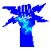
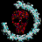
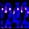
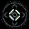

techno cyber electro web ring
El Techno Cyber Electro Web Ring es un proyecto destinado a intentar reunir en un anillo a todas las páginas posibles dedicadas al mundo del Techno (no confundir con bacalao o rave), Gótico, Electro, Cyberpunk, etc. Si tienes una página de este estilo, y quieres unirte, e-mailéame a cyberdark@biosys.net. Aquí puedes ver todas las páginas que componen actualmente el anillo. Pincha en el icono para ir directamente a la página que desees. |
The Techno Cyber Electro Web Ring is a project with the goal of joining all the web sites in spanish dedicated to Techno, Gothic, Cyberpunk, etc. If you have a site like this, and you want to join, e-mail me to cyberdark@biosys.net. Here you can see all the web sites that actually belong to the ring. Make click on the icon to go to the desired web site. |
|  | xxx cyber dark electronics xxx Web fundador del anillo. Dedicado a música dark electro (Calva y Nada, Project Pitchfork, Das Ich, etc) |
| Ogo Página del grupo mexicano Ogo | |
| Página Industrial de El Topo Página dedicada a la música industrial de toda la vida, con samples en RA que te puedes bajar. | |
| Encefálisis Página del grupo mexicano Encefálisis. | |
| Artefakto Página del grupo mexicano Artefakto. | |
|  | Front 242 UWS Dedicada al grupo Front 242. |
| Ford Proco Grupo de música mexicano, de la ciuad de Tijuana. Han sido producidos por Coil, entre otros. | |
| Esplendor Geométrico UWS Esta web está dedicada al grupo español de música Esplendor Geométrico. | |
| Deux Ex Machina Página del grupo mexicano Deux Ex Machina. | |
| International Techno Culture Webzine sobre el techno en general, desde el rave al techno-pop. | |
| Suburban Dedicada al techno un poco más clásico, además alberga la página del grupo Agnóstica, que tocó de telonero de Front 242 en Sevilla. | |
|  | Subculture Esta es la única web del anillo en inglés. Trata sobre música Latino-americana-electrónica. Muy bien diseñada. |